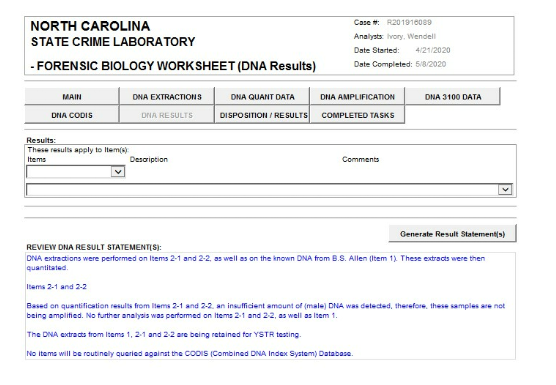
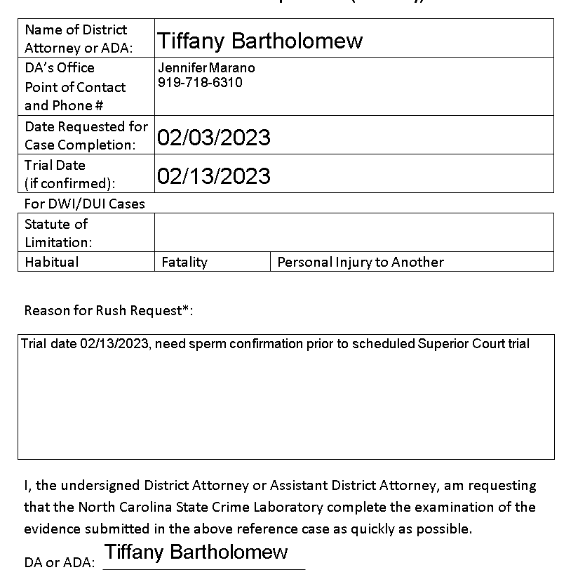
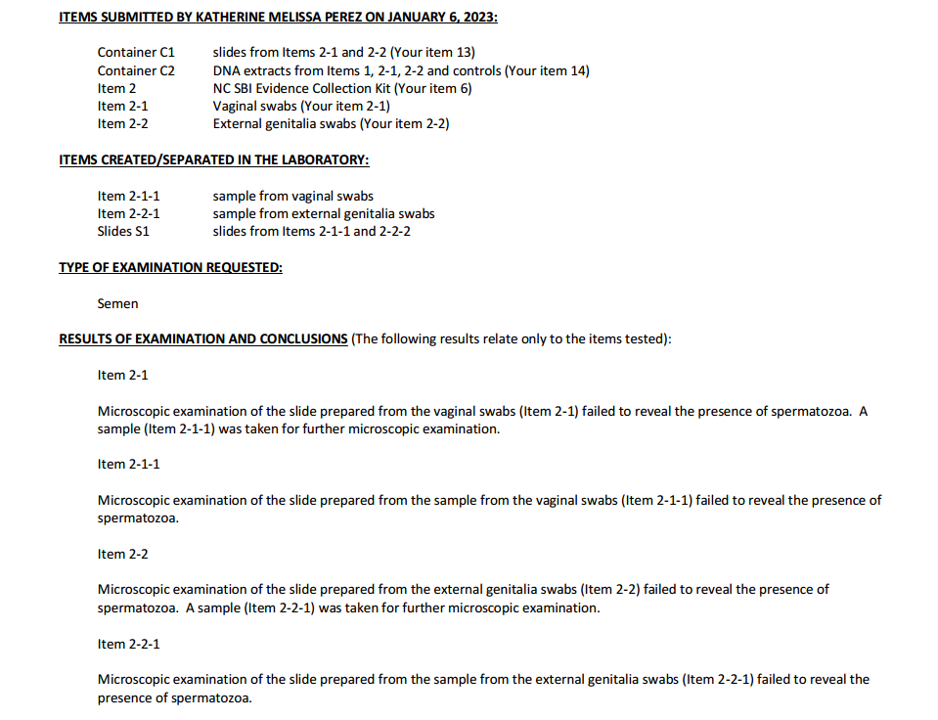
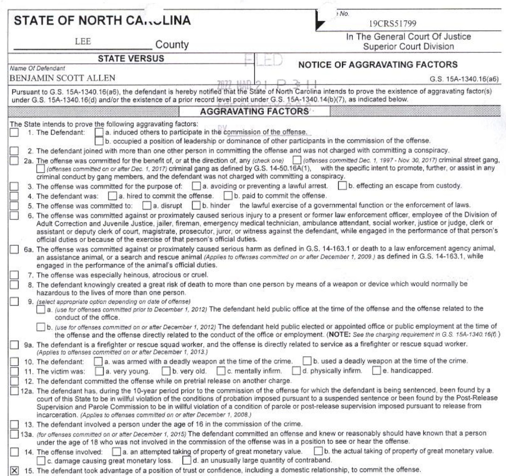

An Edifice of Lies
"Perjury is not a mistake—it is a strategy."
‹
›
Comprehensive Contradiction Matrix
Side-by-side mapping of core claims against physical evidence, witness statements, video, and documents. Each row captures a specific clash between what was claimed and what objective evidence shows.
Quick Navigation
Jump to Contradiction:
• Bonfire / 2am conversation
• Knowledge of Ben
• Reason Lauren stayed
• Bruises from restraint
• Freeman seeing bruises
• Bathroom sequence
• Initial hug / warmth
• Who invited whom
• Dispatch labeling
• Arrest type
• Carmen as neutral witness
• Scope of interviews
• Exhibit 4 authenticity
• Conditional admission
• DNA / spermatozoa
• Aggravator timing
| Issue | Claim / Narrative | Source | Contradicting Evidence | Effect on Case | Evidence |
|---|---|---|---|---|---|
| Bonfire / 2 a.m. conversation | Accuser says she told Carmen at closing (~2 a.m.) that she was going with Ben to a bonfire. | Accuser trial testimony | Bar video shows Carmen and James leaving at 12:41 a.m.; no overlap with a 2 a.m. conversation. Carmen's interview with Freeman describes Lauren choosing to stay and being fine, with no bonfire plan. Carmen Love had never even heard the name "Ben Allen". | Demonstrates fabrication of key narrative and destroys claimed corroboration by Carmen impacting Freeman's supposed probable cause. Lauren Deal wasn't in the bar at 2 a.m. She was facedown on the concrete outside the bar. |
|
| Reason Lauren stayed at the bar | Later narrative implies she was isolated, vulnerable, and effectively set up. | Evolving accuser narrative | Carmen tells Freeman that Lauren stayed by choice, said she was fine, and would call later. No mention of fear, pressure, or coercion. | Shows the earliest witness account contradicts the later victimhood framing. |
|
| Initial hug / warmth | Accuser claims she ran up and hugged Ben warmly on seeing him. The hug wasn't until much later. | Accuser trial testimony | Video shows Ben with hands in pockets, rigid posture, no reciprocal touching; later footage shows him casually putting an arm around others but never her. | Video contradicts the portrayed closeness and undercuts the truthfulness of |
|
| Who invited whom / attachment behavior | Implied that Ben pursued her attention and invited her along. | Later accuser narrative | Video and witnesses show Lauren repeatedly approaching Ben, inserting herself into his plans, and being rebuffed; Ben leaves his own group to be away from her. | Undermines coercion framing and displays more of the narrative that the ADA tried to build. | |
| Bruises from being restrained | Accuser says Ben held her down and left bruises on her arms, which were photographed. | Statements to nurse / investigators | Medical records and photos show a knee contusion and a superficial foot abrasion, with no arm bruising or restraint injuries. | Physical evidence fails to match alleged mechanism of assault. | |
| Freeman seeing bruises during recorded interview | Freeman testifies she showed him arm bruises during the recorded interview. | Freeman trial testimony | The recording never shows this. He later relocates the alleged bruise review to the lobby, off camera, when challenged. | Suggests tailoring of testimony and retroactive repair of a non-existent observation. | |
| Bathroom sequence / clothing | Accuser describes pulling pants down to pee, then pulling them fully up, then being suddenly pushed and forcibly undressed. | Accuser narrative of the bathroom incident | Biomechanically awkward: tight leggings must be removed twice in seconds, with one hand allegedly restraining her, no injuries consistent with a violent struggle, and no semen detected. | Implausible sequence points toward narrative construction rather than lived event. | |
| Knowledge of Ben / Relationship depth | Accuser portrays Ben as someone she knew well through an on-and-off relationship with his ex. | Accuser statements to Haines and at trial | She also states she hadn't seen him in a year and thought he was deployed. Records show structured, supervised contact between Ben and Tiffany, not casual cohabitation. | Undermines "position of trust or confidence" aggravator; suggests later embellishment for sentencing leverage. | |
| Dispatch labeling as sexual assault | Case framed as sexual assault from the outset based on clear information. | Dispatch logs and testimony | Dispatch uses sexual assault language before Deal herself uses the term; Freeman is notified of a sexual assault case before Haines completes initial questioning. | Shows charge category was pre-selected before facts were fully gathered. | |
| Arrest type (with vs without warrant) | Freeman says the magistrate issued a warrant and only then was Allen processed. | Freeman trial testimony | Magistrate form is checked as "arrest without warrant," reflecting post-arrest probable cause review under statute, not pre-arrest warrant issuance. | Indicates misleading testimony about the seizure's legality and sequence. | |
| Carmen as neutral third party | Freeman treats Carmen as just another witness supporting probable cause. | Investigative paperwork and testimony | Carmen is Freeman's relative; this relationship was never disclosed, and her original statements undercut the accuser. This is classic conflict-of-interest plus Brady–Giglio material. | Corrupts the integrity of the investigation and the magistrate's probable cause assessment. | |
| Scope of witness interviews | Investigation was thorough and neutral. | Freeman's description of his workup | He never interviews James or Peter, despite their being present all night and named by Carmen and others. He does, however, press for names when a witness might support the State. | Shows selective investigation and a pattern of only chasing evidence that fits the theory. | |
| Exhibit 4 – authenticity and authorship | Facebook messages are between Lauren and Ben and show planning or sexual interest. | State's use of Exhibit 4 | Screenshots include lines that the sender is not Ben but "Matt using his phone," and a later apology from Ben that he didn't have the phone. No metadata, no full thread, and no phone-extraction testimony are provided. | Authentication is fatally compromised; Exhibit 4 cannot reliably be tied to Ben. | |
| Conditional admission of Exhibit 4 | Court admitted Exhibit 4 as proper evidence. | ADA's posture at trial | Judge allowed only conditional admission of the first page, contingent on proof of an earlier bonfire-related conversation. The State never fulfilled that condition but proceeded as if fully admitted. | Turns a conditional ruling into a de facto permanent admission, bypassing foundation requirements. | |
| DNA / spermatozoa evidence | State implies there is sperm evidence consistent with intercourse along with severe damage to the accusers vagina. The ADA change the mechanism of injury during the trial since there was no injury as she claimed. | ADA's statements during plea discussions | The State had no DNA evidence when the offer was made as the test from 04/21/2020 showed an insufficient amount of male DNA. After the plea demand the ADA submitted for sperm testing on 02/03/2023 which came back negative. ADA later claims she misunderstood the report despite not even having submitted for the testing of sperm at the time. This is an obvious fabrication. | Plea leverage built on a misrepresentation; later retreat framed as confusion strains credibility. Ambushed the defense with the mental injury leaving no time for preparation. |



|
| Aggravator timing | "Position of trust or confidence" is a natural outgrowth of the facts. | Charging decisions post-plea refusal | Aggravator appears only after defendant rejects the plea; no new evidence emerges between the plea rejection and filing. | Strong indicator of prosecutorial vindictiveness and punishment for asserting trial rights. Prosecutor following through on threat if plea refused. |

|